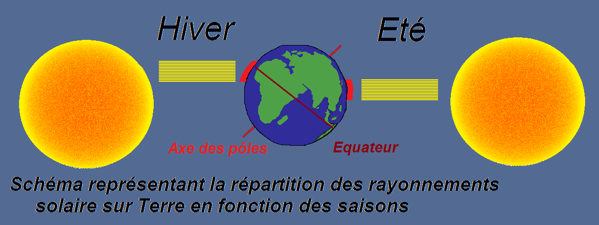

Les saisons sur Terre
La Terre tourne autour du Soleil sur un plan qu'on appelle plan de l'écliptique. Or, l'équateur et le plan de l'écliptique ne sont pas alignés. L'axe des pôles autour duquel tourne la Terre n'est donc pas perpendiculaire au plan de l'écliptique, on peut dire que la Terre est légérement "penchée" par rapport à ce plan. Ainsi, pour une même latitude, la quantité d'énergie solaire reçue varie au cours d'un année en fonction de la position de la Terre par rapport au Soleil.

On a donc, en fonction de l'année, des températures qui varient en fonction de la position de la Terre par rapport au Soleil. Ce phénomène est particulièrement important aux abords des tropiques, on parle alors de quatre saisons atmosphériques: le printemps, l'été, l'automne et l'hiver, mais il est néanmoins beaucoup moins important aux abords de l'équateur, on parle alors seulement de deux saisons, saison des pluies et de saison sèche, en fonction du climat local.
Retourner à la page en cours
Condensation de la vapeur d'eau en altitude
Plus l’air est chaud, et plus il peut contenir de vapeur d’eau. On appelle la limite à partir de laquelle l’air ne peut plus contenir de vapeur d’eau la limite de saturation. Puisque l’air chaud se refroidit au contact de l’air froid, sa limite de saturation diminue. La vapeur d’eau en surplus va alors se condenser en de très fines gouttelettes autour de noyaux de condensation (tel que des particules de poussière).
Retourner à la page en cours
Une classification des nuages mitigée
La classification des nuages est un problème qui est encore d’actualité. En effet, les différentes classes de nuage tel que les cumulus et les stratus ont été définies au XIXème siècle, s’appuyant sur leurs différentes formes et faisant fi de leur formation. D’autres classifications ont depuis vu le jour, notamment celle de l’Atlas international des nuages qui classe les nuages en trois catégories en fonction de leur altitude et celle du National Aeronautics and Space Administration (NASA) en 1976, qui les classe en cinq catégories en fonction de leur structure physique.
Retourner à la page en cours